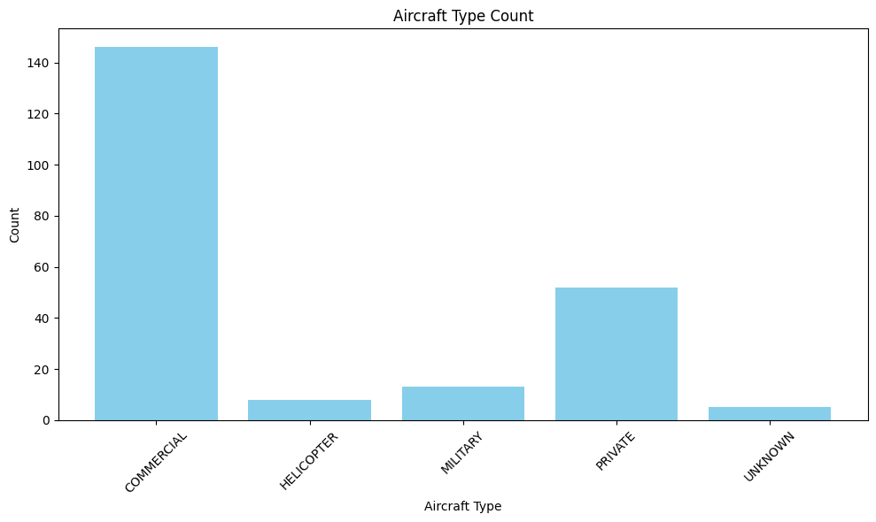

import os
import requests
from bs4 import BeautifulSoup
import pandas as pd
import reUse ChatGPT to determine the plane type
df = pd.read_csv("/Users/karinashedrofsky/LEDE_2023/flights-project/csvs/all_plane_info.csv")Make list of all unique plane make/models from flight data
unique_planes = []
unique_planes.extend(df['plane'].unique().tolist())len(unique_planes)224Ask ChatGPT
Take each plane make/model from the data and ask ChatGPT whether it’s typically used as a private, commercial, military or helicopter.
from dotenv import load_dotenv
load_dotenv()
API_KEY = os.getenv("PROJECT_API_KEY")from langchain.chat_models import ChatOpenAI
llm = ChatOpenAI(openai_api_key=API_KEY, model_name="gpt-3.5-turbo")template = """
Categorize the following airplane model as typically being used as either a
private plane, commercial plane, military plane or helicopter.
Respond with only the plane type: PRIVATE, COMMERCIAL, MILITARY, HELICOPTER.
Then print the maximum number of passengers the plane model can hold,
separated from the plane type with a comma. Don't print anything else after the number of passengers.
If you're unable to determine the type of plane, simply print UNKNOWN
Airplane model: Boeing 737
Response: COMMERCIAL, 132
Airplane model: {plane_model}
Response:"""
results = []
for plane in unique_planes:
prompt = template.format(plane_model=plane)
response = llm.predict(prompt)
results.append([plane, response])
# Create a DataFrame from the 'results' list
plane_type_df = pd.DataFrame(results, columns=['Plane', 'Info'])Save the ChatGPT results to a csv
This is to avoid having to run it through again
plane_type_df.to_csv("/Users/karinashedrofsky/LEDE_2023/flights-project/csvs/gpt_results.csv", index=False)len(plane_type_df)224Clean up the resulting DataFrame
#Split up the ChatGPT answers into two columns
plane_type_df[['type', 'max_passengers']] = plane_type_df['Info'].str.split(',', expand=True)
plane_type_df.drop(columns=['Info'], inplace=True)plane_type_df| Plane | type | max_passengers | |
|---|---|---|---|
| 0 | Boeing 737-8LJ | COMMERCIAL | 132 |
| 1 | Boeing 737-958ER | COMMERCIAL | 189 |
| 2 | Airbus A321-251NX | COMMERCIAL | 240 |
| 3 | Boeing 767-3Y0ER | COMMERCIAL | 375 |
| 4 | Airbus A320-214 | COMMERCIAL | 150 |
| ... | ... | ... | ... |
| 219 | Boeing 737-8S3 | COMMERCIAL | 189 |
| 220 | Boeing 757-28A | COMMERCIAL | 239 |
| 221 | Gulfstream Aerospace G-IV-SP | PRIVATE | 19 |
| 222 | Airbus A330-223 | COMMERCIAL | 440 |
| 223 | Tupolev Tu-214VPU | MILITARY | UNKNOWN |
224 rows × 3 columns
#Save it as csv
plane_type_df.to_csv("/Users/karinashedrofsky/LEDE_2023/flights-project/csvs/plane_type.csv", index=False)Break down how many of each plane category are in the data
plane_type_counts = plane_type_df.groupby('type').size().reset_index(name='count')
plane_type_counts| type | count | |
|---|---|---|
| 0 | COMMERCIAL | 146 |
| 1 | HELICOPTER | 8 |
| 2 | MILITARY | 13 |
| 3 | PRIVATE | 52 |
| 4 | UNKNOWN | 5 |
Visualize it as a bar chart
plt.figure(figsize=(10, 6)) # Set the size of the plot
plt.bar(plane_type_counts['type'], plane_type_counts['count'], color='skyblue')
plt.xlabel('Aircraft Type')
plt.ylabel('Count')
plt.title('Aircraft Type Count')
plt.xticks(rotation=45)
plt.tight_layout()